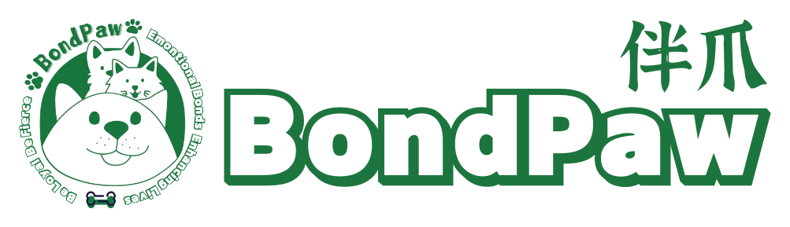
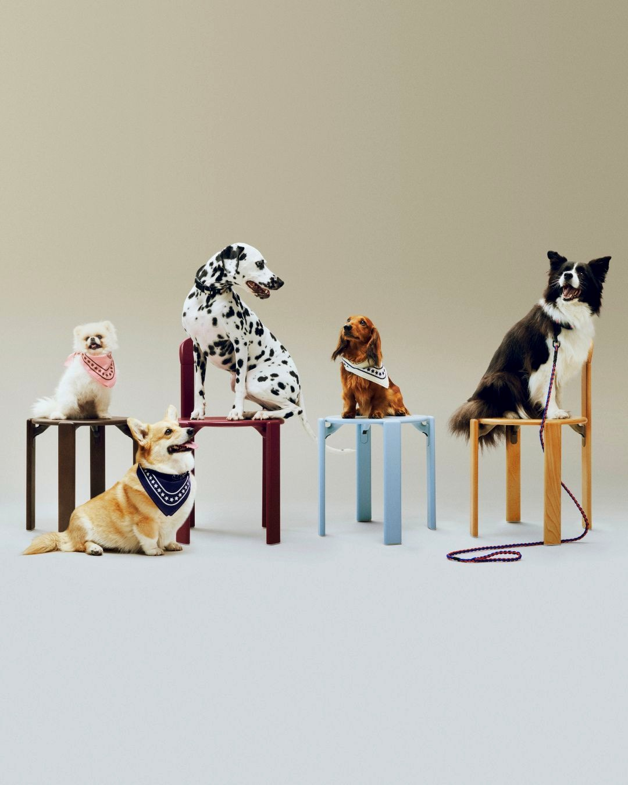
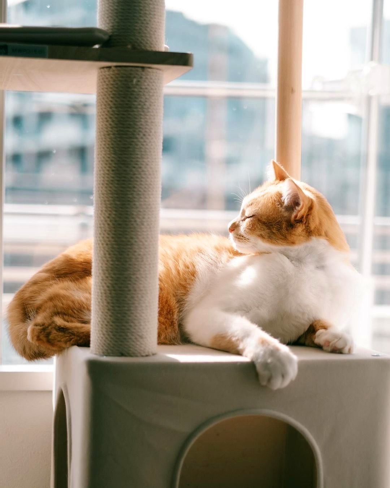

低压接触
蹲下、侧身、等待宠物主动靠近。先建立信任，再开始服务。

预约咨询About BondPaw
你不是在找一个“临时来一趟的人”。你是在找一个能尊重家、读懂宠物、愿意按标准做事的照护伙伴。

Why We Started
到店太折腾，个人上门又担心不透明。伴爪从这个缝隙里长出来：把专业护理带到家中，把服务动作拆成标准，把过程交给主人看见。
Team Standard
蹲下、侧身、等待宠物主动靠近。先建立信任，再开始服务。
关注皮肤、耳道、排泄、食欲、精神状态，发现异常及时反馈。
关键节点拍照或视频记录，让主人知道宝贝被怎样照顾。
What We Promise
